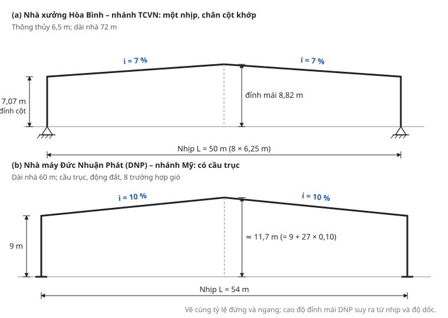

Bài 1.4. Quy trình thiết kế và hai công trình mẫu Design workflow and the two case-study buildings
Giáo trình đi theo một quy trình 9 bước chung cho hai nhánh tiêu chuẩn, minh họa bằng hai công trình thật.
- Nắm 9 bước thiết kế và chương tương ứng của mỗi nhánh.
- Nhớ các thông số chính của nhà xưởng Hòa Bình và nhà máy DNP.
1. Tình huống
Bạn nhận hai hồ sơ cùng lúc: nhà xưởng Hòa Bình thiết kế theo TCVN, nhà máy Đức Nhuận Phát (Quảng Ninh) theo tiêu chuẩn Mỹ vì chủ đầu tư nước ngoài. Cần biết với mỗi công trình, SAP2000 làm được gì và phần nào phải tính ngoài.

2. Nội dung chính
Quy trình thiết kế bằng SAP2000
Giáo trình theo một quy trình thống nhất cho cả hai nhánh tiêu chuẩn:
| Bước | Nội dung | TCVN | Mỹ |
|---|---|---|---|
| 1 | Hồ sơ kiến trúc, tiêu chí thiết kế | Ch.1 | Ch.8 |
| 2 | Mô hình hình học, tiết diện, vật liệu, liên kết | Ch.2–3 | Ch.2–3 |
| 3 | Tải trọng | Ch.4 | Ch.9 |
| 4 | Tổ hợp | Ch.5 | Ch.10 |
| 5 | Phân tích (tuyến tính, P-Δ, DM) | Ch.5 | Ch.11 |
| 6 | Thiết kế cấu kiện | Ch.6 (Excel) | Ch.12–13 (SAP Steel Design) |
| 7 | Điều kiện sử dụng | Ch.5 | Ch.14 |
| 8 | Liên kết | Ch.7 | Ch.15 |
| 9 | So sánh, thuyết minh, bản vẽ | Ch.16–17 | Ch.16–17 |
Bảng 1.3. Quy trình thiết kế và chương tương ứng
Lưu ý về SAP2000 và TCVN. SAP2000 không có mô-đun thiết kế theo TCVN 5575:2024. Nhánh TCVN dùng SAP2000 để phân tích, rồi xuất nội lực sang bảng tính Excel (Chương 6). Nhánh Mỹ dùng trực tiếp Steel Frame Design – AISC 360-10 trong SAP2000 (Chương 12), có tính tay đối chứng (Chương 13).
Hai công trình mẫu
| Nhà xưởng Hòa Bình (nhánh TCVN) | Nhà máy Đức Nhuận Phát – Quảng Ninh (nhánh Mỹ) | |
|---|---|---|
| Mô hình | 250303_NhaXuong / 250317_NhaXuong (video Buổi 01–08) | NM DNP-21.04 (video Buổi 11–14) |
| Nhịp × dài | 50 m (8 × 6,25 m) × 72 m | 54 m × 60 m |
| Bước khung | 8 m | 12 m |
| Chiều cao | Đỉnh cột 7,07 m; đỉnh mái 8,82 m; thông thủy 6,5 m | Đỉnh cột 9 m |
| Độ dốc mái | 7 % | 10 % |
| Vùng gió | II-B, $W_0$ = 95 daN/m² | II, Exposure B, $V$ = 54,5 m/s (quy đổi) |
| Đặc điểm | Một nhịp, chân cột khớp, tôn mái | Có cầu trục, động đất, 8 trường hợp gió |
Bảng 1.4. Hai công trình mẫu
Các ví dụ trong từng chương lấy số liệu từ hai công trình này để người học đối chiếu với mô hình và video của khóa.
3. Luyện tập
Vì sao nhánh TCVN phải xuất nội lực sang Excel để kiểm tra cấu kiện?
Gợi ý
Xem đoạn "Lưu ý về SAP2000 và TCVN".
Lời giải
SAP2000 chỉ có các mô-đun thiết kế theo tiêu chuẩn nước ngoài (AISC…), không có TCVN 5575:2024.
Nhà xưởng Hòa Bình: đỉnh cột 7,07 m, đỉnh mái 8,82 m. Chênh cao giữa đỉnh mái và đỉnh cột là bao nhiêu?
Gợi ý
Lấy hiệu hai cao độ; có thể kiểm tra lại bằng nửa nhịp × độ dốc.
Lời giải
$8{,}82 - 7{,}07 = 1{,}75$ m (kiểm tra: $25 \times 0{,}07 = 1{,}75$ m).
Nhà máy DNP: nhịp 54 m, đỉnh cột 9 m, mái dốc 10 %, hai mái đối xứng. Tính cao độ đỉnh mái.
Gợi ý
Nửa nhịp 27 m.
Lời giải
$9 + 27 \times 0{,}10 = 11{,}7$ m.
- 9 bước: hồ sơ → mô hình → tải → tổ hợp → phân tích → cấu kiện → sử dụng → liên kết → hồ sơ (Bảng 1.3).
- Nhánh TCVN: SAP2000 phân tích + Excel kiểm tra. Nhánh Mỹ: SAP Steel Frame Design + tính tay đối chứng.
- Hòa Bình: 50 × 72 m, bước 8 m, dốc 7 %; DNP: 54 × 60 m, bước 12 m, dốc 10 %, có cầu trục (Bảng 1.4).